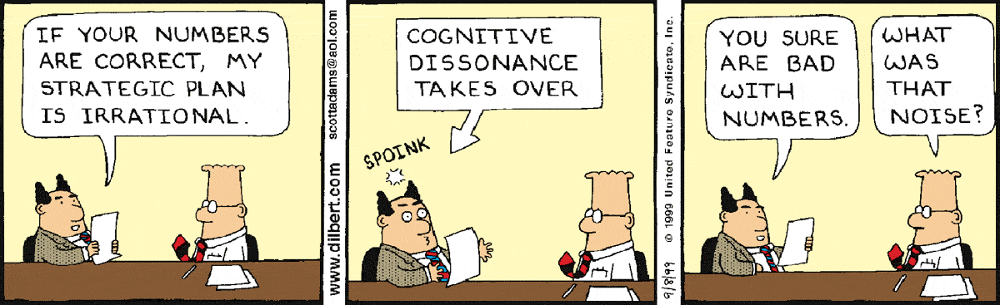

I dedicate this installment to my partner and muse, Marjorie Green, on her birthday and our third mensiversary. I credit her for the most impactful word in this series’s title, “healing”. It’s a powerful word with the added value of being spot on.
My objective here has not been to prescribe ways to “fix” the world (although I’m fond of urging others to accept responsibility: “Fix the problem instead of fixing the blame!”). Marjorie’s word “healing” is particularly descriptive because it evokes modern medicine’s aftermath: An often mysterious but invariably natural process of repair. In writing this series, my objective has been to emphasize the role of technology as a tool rather than a savior. Technology should support natural processes rather than replace or destroy them.
As I’ve continued to write, it’s become apparent that the developed world has an irrational reverence for the Silicon Valley version of ‘technology’. That version leads to terra ex machina models that justify research grants but leave non-technologists with the false impression that innovation is an inevitable consequence of scientific progress that can happen without risk. Simulated Earth, no matter how detailed, cannot capture all the nuances (both positive and negative) of our actions as humans. We shouldn’t expect it to have a guaranteed outcome.
As I’ve pointed out a few times here, the problem with models is that they always give an answer. From a scientist’s perspective, it’s nirvana: Every in-silico experiment works and is reproducible. But, unfortunately, quality control of models, such as it is, is subjective: If the answer seems unrealistic to its developer, the model is assumed to be in error, so it is adjusted until it makes sense. Consequently, despite earnest attempts at objectivity, even these models show bias, particularly confirmation bias , a social affliction that has reached pandemic levels.
To explore bias in computer models, I turned to the trendy AI oracle, ChatGPT , to ask it a few ‘personal’ questions. Here’s a transcript of our “conversation”:
Do you think that humans will ever be as logical as you are?
As a machine, I have been programmed to process information and make logical decisions based on that information. Humans, on the other hand, have emotions, biases, and other factors that can influence their decision-making. While humans can certainly strive to be more logical and make decisions based on reason and evidence, it is unlikely that they will ever be able to completely eliminate the influence of emotions and other subjective factors on their decision-making. Additionally, I am a machine and i don't have the ability to think, so i cannot have any opinion on this matter.
How can humans avoid bias?
To avoid bias, one can try to be aware of one's own biases and try to counteract them by seeking out diverse perspectives, being open to changing one's mind, and being willing to consider alternative explanations for events. Additionally, people can try to gather information from multiple, credible sources, and think critically about the evidence presented to them. Finally, it's important to be mindful of one's own emotions and how they might be influencing one's thoughts and decisions.
It's worth noting that it is not always possible to avoid bias completely. Bias is a natural part of human cognition and it is a complex phenomenon that can be influenced by a variety of factors. However, by being aware of one's own biases and trying to counteract them, individuals can improve the accuracy and fairness of their decision making.
Is bias ever a good thing?
Bias can have both positive and negative effects depending on the context. For example, a bias towards a certain type of food can make an individual to eat healthy food and avoid unhealthy one. A bias towards certain type of music can make an individual to enjoy good music.
On the other hand, bias can also lead to harmful or unfair decisions when it is based on prejudice or inaccurate information. For example, a bias against a certain group of people can lead to discrimination and injustice. A bias towards certain type of information can lead to misinformation and a lack of critical thinking.
In general, it is important to be aware of one's own biases and to try to counteract them when they may be leading to harmful or unfair decisions. By being aware of one's own biases and trying to counteract them, individuals can improve the accuracy and fairness of their decision making.
Are computer models ever biased?
Computer models, including language models like myself, can be affected by bias in a variety of ways. One way that bias can be introduced is through the data that is used to train the model. If the training data contains biases, then the model will learn and reproduce those biases in its predictions or outputs. For example, if a model is trained on a dataset that is overwhelmingly male-dominated, then it may not perform well on inputs related to women or may reproduce gender stereotypes.
Another way that bias can be introduced is through the design of the model itself. For example, if the model is designed to optimize for a specific metric that is not representative of the overall performance, then it may produce biased results.
It's important to note that bias in computer models can have serious consequences, particularly in fields such as healthcare, finance, and criminal justice, where decisions made by models can have a significant impact on people's lives. To mitigate bias, it's important to be aware of the potential sources of bias in the data and model design, to use diverse and representative training data, to evaluate the model's performance on a diverse set of inputs, and to apply fairness constraints during the model's training.
I hit a nerve (or, more accurately, a circuit)! ChatGPT asserts that bias is a value judgment dependent on context and shared values. But then, the AI fixes the blame on others, in this case, blaming its failures on its training and its handler’s choice of optimization goal! At least it has the modesty to admit that it doesn’t think.
Nevertheless, the analysis leads to the subject of today’s installment. Consider the following Dilbert:

Like most of Dilbert, this strip has an ironic twist with the familiar ring of truth. It’s easy to imagine Dilbert as the IPCC and his pointy-haired boss as global leadership. This perspective goes a long way toward explaining why IPCC continues to exist and how various COPs have become COP-outs. ‘Cognitive dissonance’ is at the heart of today’s climate problem that we’re failing to address, and it’s a well-established property of the psychology we all share.
The anxiety of ‘cognitive dissonance’ is complementary to the pleasure of ‘confirmation bias’, or ‘cognitive resonance’. Fundamentally, we all feel good about being ‘right’ and bad about being ‘wrong. It’s an emotional response. But what should we do about it?
The hyper-logical AI chatbot suggests that we mortals do the following. First, acknowledge that everyone is biased, even those who create AI. In other words, it’s not someone else’s problem. Then:
-
Seek out diverse perspectives,
-
Be open-minded and consider alternative explanations,
-
Gather information from multiple credible sources,
-
Think critically about the evidence, and
-
Be mindful of the influence of our emotions.
In other words, we need to think critically about what we’re being told and question what we think we know. In doing so, we will recognize the limits of our recognition, our personal “blind spots”. [I covered mine in detail in earlier installments and surely missed a few.] It helps to embrace the perspective that “none of us is as smart as all of us”, no matter how individually smart we’ve been told we are. As a high-IQ Ivy League graduate, recognizing my limitations while keeping an open mind is particularly challenging! It takes significant effort to admit when I am wrong (rarely!), but it’s also an opportunity for growth. I’ve learned to embrace it.
Yes, it would be best to follow my advice and think for yourself, but it shouldn’t be done in a vacuum or confused with knowing the truth. Instead, gravitate toward anxiety, and get comfortable with the dissonance between your views and how the world is. Of course, the paradoxes will make you feel uncomfortable, but that’s the idea! Your thoughts are a model of how the world works, and it shouldn’t be surprising that your model is just as wrong as every other model.
Throughout these installments, I’ve distinguished between the utopian Truth of Science and what scientists and other experts believe. Nobody has a monopoly on the truth. Actively seek observations and conversations that don’t fit your worldview, particularly if you’re an expert. It helps to appreciate that, just like ChatGPT, it’s easy to miss the bias in your mental models when it’s what you’ve been trained on.
Is this exercise arduous and uncomfortable? Sure. But is it ultimately rewarding? Yes. Consider the outro to The Beatles’ “A Day in the Life”—out of a chaotic crescendo, a seemingly endless chord appears. Resolving dissonance creates enduring beauty.
Thank you for reading Healing the Earth with Technology. This post is public so feel free to share it.